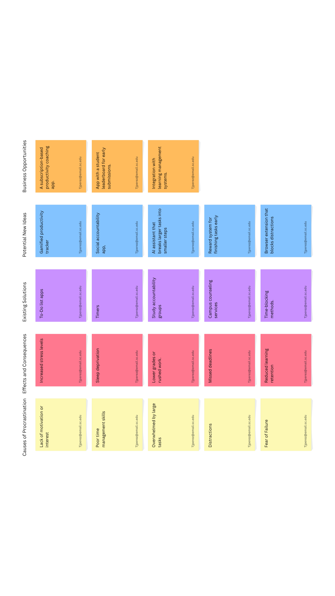

Highlighted Projects
{kind=link}
Problem Statement
Many students struggle with procrastination, often delaying important tasks until the last minute, which leads to stress and lower-quality work.
{kind=link}
Affinity Diagram
An app designed to reduce procrastination by helping students plan tasks and stay on track.
{kind=link}
Sketches
These sketches represent an anti-procrastination productivity app which is designed to help students manage their time and tasks more efficiently.
1. Mobile Dashboard: This shows a Pomodoro timer, progress bar, and a checklist of tasks.
2. Task breakdown: This is going to show how the AI assistant divides large tasks into smaller and more manageable subtasks with deadlines.
3. Reward System: Displays motivational elements such as badges, levels, and inspirational quotes to help to keep students and other users engaged.
4. Web Dashboard: This provides an overview of user progress, productivity streaks, and completion statistics.
Together, these sketches visualize how the app will help users to plan, focus, and stay motivated through mobile and web interfaces. Credit for the sketches goes to ChatGPT
Procrastination: How to Move Forward

Code from a project I did on procrastination about a year ago. I lost the files for the images that I had on the website though.